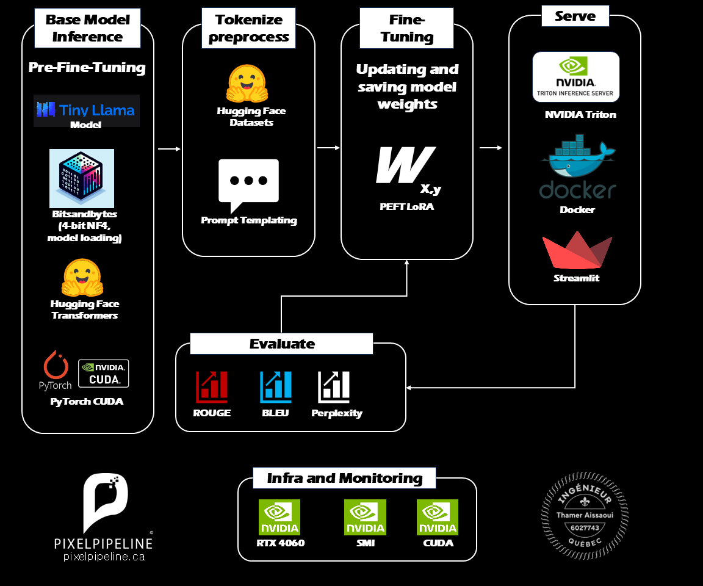

Fine-tuning & Deploying LLMs with NVIDIA NeMo
High-Performance Model Engineering on RTX Infrastructure

The Architecture: Precision Model Tuning
To achieve enterprise-grade performance, generic base models must be tailored to specific domains. This project demonstrates a vertical AI approach using NVIDIA’s high-performance stack to fine-tune, evaluate, and deploy localized LLMs with maximum efficiency.
Video Demonstration
Base Model Inference & Quantization
The journey begins with the Tiny Llama base model. Before fine-tuning, we optimize for memory efficiency using Bitsandbytes 4-bit NF4 quantization. This allows us to load and train powerful models on standard hardware without compromising the core weights or response quality.
Advanced Tokenization & Preprocessing
Clean data is the foundation of high-quality models. We leverage Hugging Face Datasets for robust data management and implement mature prompt templating strategies to ensure the model learns consistent, helpful response patterns during the training phase.
Parameter-Efficient Fine-Tuning (PEFT)
Rather than training billions of parameters from scratch, we utilize PEFT and LoRA (Low-Rank Adaptation). This strategy only updates a small subset of model weights, drastically reducing training time and compute requirements while achieving performance comparable to full model fine-tuning.
Rigorous Model Evaluation
Insights must be quantified. Every fine-tuned model undergoes comprehensive evaluation using ROUGE (recall), BLEU (precision), and Perplexity (predictive confidence) metrics, ensuring the output is clinically accurate and naturally fluent before it reaches production.
NVIDIA-Native Production Serving
For high-availability serving, we deploy via the NVIDIA Triton Inference Server. Running within Docker containers and presented through a Streamlit interface, the entire infrastructure is optimized for NVIDIA RTX 4060 GPUs, leveraging CUDA and SMI for real-time performance monitoring.